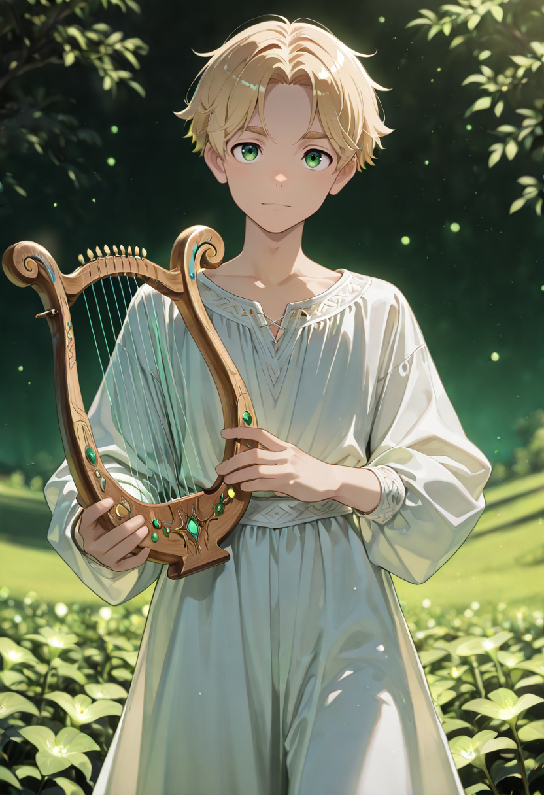
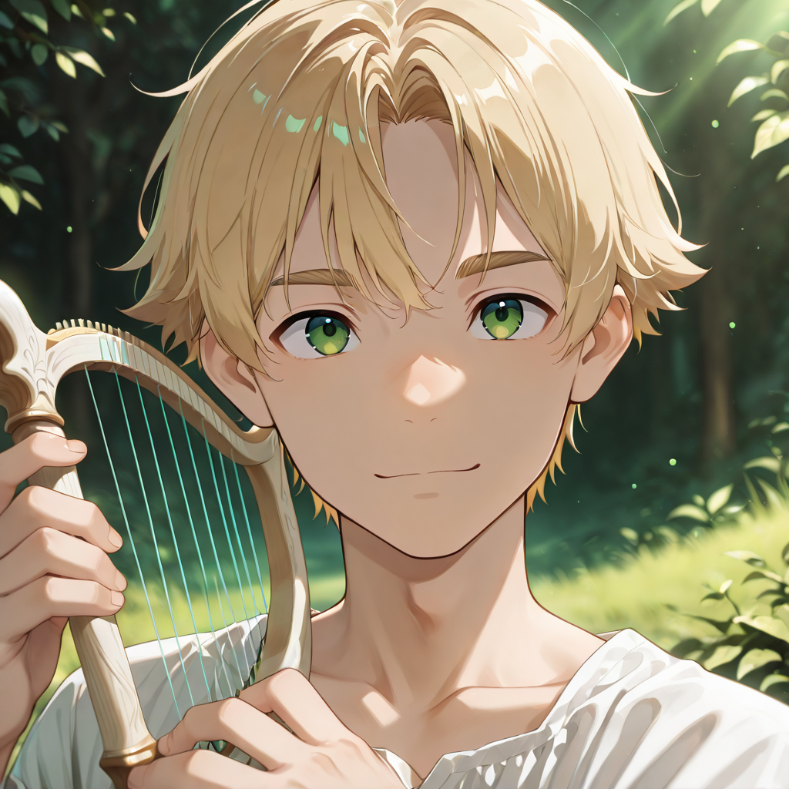

The Science of Staying Alive
The Herbalist is the applied science wing of the Linfa branch. Where the Vestal works on the spiritual and the Priestess on the divine, the Herbalist works on the chemical, the botanical, the empirical. She keeps notes. She records what dosages worked and which ones didn't. She has killed more enemies with incorrect poultices than with weapons , by accident, then later on purpose.
In the Economy of Merit, the Herbalist occupies the seat of the researcher , one of the highest-valued roles in the Empire. Their knowledge compounds. Each battle adds to a body of practical medicine that the Empire couldn't have developed in a hundred years of peace, simply because there wasn't enough trauma volume to collect the data from.
Their form retains a laboratory quality: small glass tubes of colored fluid attached to a bandolier, hands that never stop moving, a posture of perpetual slight-forward lean. They smell of green things and copper. It is a surprisingly reassuring smell.
Tactical Data
Nature's Sage
BasePrimordial Potion
ActiveFlourish
PassiveGallery

